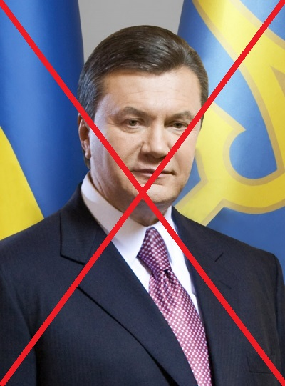

Період президентства Віктора Януковича (2010—2014)
Головна | 1991-1994 |
1994-2004 |
2005-2010 |
2010-2014 |
2014-2019 |
2019-2022 |
Віктор Янукович
(МУДАК)

Хронологія подій:
- 13 січня: Апеляційний суд міста Києва визнав, що Сталін, Молотов, Каганович, Постишев, Косіор, Чубар та Хатаєвич вчинили злочин геноциду українського народу.
- 17 січня: перший тур виборів президента України.
- 22 січня: Президент України Віктор Ющенко присвоїв Степану Бандері звання Героя України
- 7 лютого: Президентом України обраний лідер опозиційної Партії регіонів Віктор Янукович.
- 3 березня: Верховна Рада України 243 голосами відправила уряд Юлії Тимошенко у відставку.
- 21 квітня: у Харкові президенти Росії Медведєв та України Янукович підписали угоду про базування Чорноморського флоту Росії в Севастополі.
- 9 червня: помер Олександр Олексійович Зінченко, український політик і журналіст.
- 10 вересня: на київському «Автошоу 2010» ЗАЗ презентував електромобіль ЗАЗ Lanos фургон Електро і автобуси ЗАЗ-A10C31 та ЗАЗ-А10L50
- 31 жовтня: чергові вибори до місцевих рад, на яких в цілому одержала перемогу Партія Регіонів.
- 26 грудня: заарештовано екс-міністра внутрішніх справ, опозиціонера Юрія Луценка
2011:
- 22 березня: проти екс-президента Леоніда Кучми порушено кримінальну справу.
- 2 липня: Володимир Кличко переміг у Гамбурзі британця Девіда Хея і додав собі титул чемпіона за версією WBA. Таким чином, брати Клички зібрали усі титули у надважкій вазі.
- 5 серпня — у Печерському суді Києва заарештована Юлія Тимошенко.
- 29 жовтня — відкриття нового стадіону «Арена Львів», на якому проходитимуть ігри Євро-2012.
- 30 грудня: засуджену Юлію Тимошенко доправлено до Качанівської колонії у м. Харкові.
2012:
- 27 лютого: опозиціонера, екс-міністра внутрішніх справ Юрія Луценка засуджено до 4 років позбавлення волі і конфіскації майна.
- 14 квітня: на 74-му році життя помер український модельєр Михайло Воронін — єдиний кутюр'є — рекордсмен «Книги рекордів Гіннеса».
- 27 квітня: терористичний акт у Дніпропетровську — вибухнуло 4 урни.
- 8 червня — 1 липня — Польща і Україна прийняли Чемпіонат Європи з футболу 2012.
- 3 червня: Верховна Рада прийняла скандальний закон про основи державної мовної політики («Закон Колесніченка-Ківалова»), який передбачає використання регіональних мов на місцевому рівні.
- 22 липня: у віці 70 років помер Богдан Ступка.
- 28 жовтня: Відбулися вибори до Верховної Ради України.
- 19 листопада — набув чинності новий Кримінально-процесуальний кодекс України, підписаний президентом В. Януковичем 14 травня.
- 13 грудня: Верховна Рада 7-го скликання обрала собі головою Володимира Рибака і повторно затвердила прем'єром Миколу Азарова.
2013:
- 2 січня — президент України Віктор Янукович підписав указ про видання Великої української енциклопедії протягом 2013—2020 років.
- 13 січня — помер Михайло Горинь.
- 1 лютого — Дмитро Фірташ став власником медіа-холдингу Валерія Хорошковського Inter media group limited з телеканалами Інтер, НТН, К1, МЕГА, Ентер-фільм, К2, Піксель та MTV, за 2,5 млрд.доларів.
- 12 лютого — помер Геннадій Йосипович Удовенко.
- 7 квітня — Президент України Віктор Янукович підписав указ про помилування екс-міністра внутрішніх справ Юрія Луценка.
- 1 жовтня — в Україні стартував останній (як тоді гадалося…) призов громадян на строкову військову службу.
- 24 листопада — Всеукраїнська акція непокори владі з вимогою підписання угоди про асоціацію з ЄС та відставкою уряду Азарова. Початок Європейських майданів по всій Україні, найбільшими з яких були Київський та Львівський.
- 28-29 листопада — формальний і безрезультатний візит Перзидента В.Януковича на саміт до Вільнюса. Ніч на 30 листопада — Силовий розгін Євромайдану в Києві. Почалася Революція гідності.
- 5 грудня — Петриківський розпис включений до списку нематеріальної культурної спадщини ЮНЕСКО.
- 8 грудня — Києвом пройшов Марш мільйонів — друге народне віче Євромайдану.